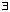
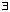
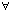

Look at the picture:
Look at the picture:
Look at the picture:
A point on the set d1 = 1 is inside the set d2 = 1 and so d2  d1 . Similarly (since the circle is inside the square) we have d
d1 . Similarly (since the circle is inside the square) we have d d2 .
d2 .
 Alternatively, look at a different picture:
Alternatively, look at a different picture:
d2(P, Q) = c  a + b = d1(P, Q).
a + b = d1(P, Q).
Also, both a c and b c and so
d(P, Q) = max{a, b} c.
Without a picture, (a + b)2 = a2 + 2ab + b2 a2 + b2  a + b
a + b  (a2 + b2) and so d1 d2 .
(a2 + b2) and so d1 d2 .
Also if a b then max{a, b} = a and since a2 + b2 a2 we have (a2 + b2) a and so d2 d .

If (an)  v in d1 then given
v in d1 then given  > 0,  N such that n > N d1(an ,v) < (since d1 d2 and d) and so convergence also takes place in d2 and d .
> 0,  N such that n > N d1(an ,v) < (since d1 d2 and d) and so convergence also takes place in d2 and d .
 One can draw pictures to show that d1 2 d2 and d2 2 d .
One can draw pictures to show that d1 2 d2 and d2 2 d .
(One can of course argue without using pictures too!)
Then if (an)  in d we have:
in d we have:
( > 0) ( n  N) ((an, ) < ) d2(an, ) < /2 and d1(an, ) < /2 and so convergence also takes place in d1 and d2 .
N) ((an, ) < ) d2(an, ) < /2 and d1(an, ) < /2 and so convergence also takes place in d1 and d2 .
Similarly, if convergence takes place in d2 it also takes place in d1 .
Combining this with the earlier result, sequences convergent in one of these norms are convergent in all of them.